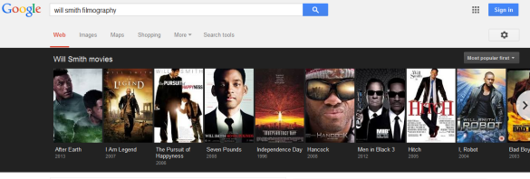
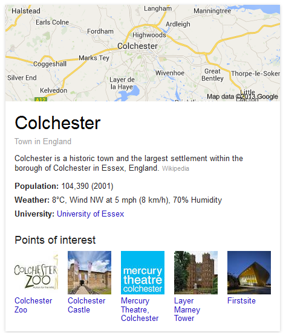
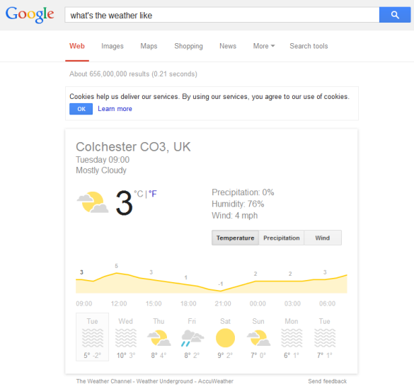
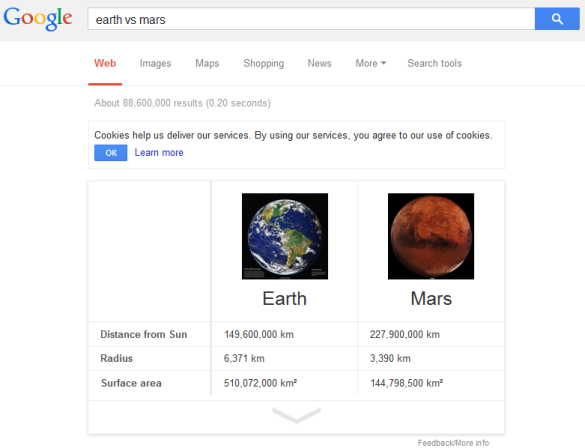
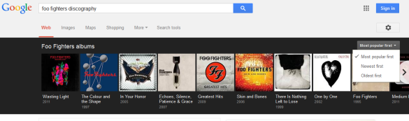
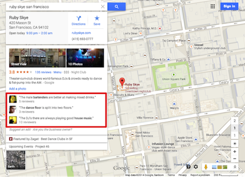
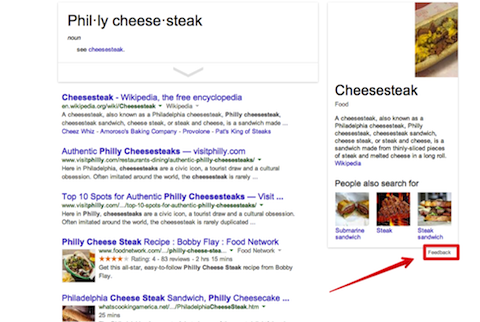
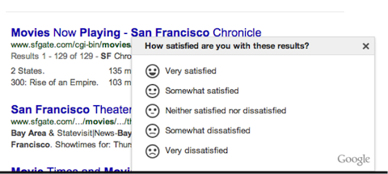

Knowledge Graph
Search Engine Optimization
What is Knowledge Graph???
1) Knowledge base used by Google to enhance search engine's results with semantic-search information gathered from a wide variety of sources.
2) Added to Google's search engine in May 16,2012, starting in the United States. Provides structured and detailed information about the topic.
"The goal is that users would be able to use this information to resolve their query without having to navigate to other sites and assemble the information themselves."
Type of information knowledge graph presents
<With 570 million entities, 18 billion facts and their semantic relations>
- Concise descriptions and the summarisation of fact based data.
- Related images to help visualise results.
- Related searches data to help a user explore similar subjects.
- Other information related to the search query (such as maps, events, and social entries).
Knowledge Graph Forms
- 1) Knowledge Panel:

- 2) Image Carosoul:
- 3) Answer Boxes:

- 4) Geo -Search:
- 5) Question Knowledge Panel:
- 6) Comparison Panel:
- 7) Filters-Knowledge form:
Working: Knowledge Graph
- Semantic search:Considers use of data points such as word variation, synonyms, concept matching, natural language, IP location, and search context
- Entity indexation and disambiguation: record everything such as noun, object, or entity and connect it to every other thing. These “things” are technically called “entities.” The process of entity mapping is called Entity Recognition and Disambiguation, or ERD.
- Autosuggest:Google will suggest you according your search keyword.
- User Behavior: Example, to the search query, “What is Knowledge Graph”, the graphed SERP comes from Wikipedia, even though Knowledge graph is a branded term of Google. This shows that algorithmically, Google prefers Wikipedia results over its own page.
Where does this data come???
Guess!!!
- 1) Freebase.com: Free and open online relational database that provided the early framework for how various things on the graph are connected.
- 2) Wikipedia.org: Most of the information associated with a side panel in the search results will be sourced from Wikipedia. Not having an entry that is up to date and accurate will be seriously detrimental to your Knowledge Graph efforts.
- 3) Google+: As Tommy Redmond of Moz.com pointed out, Google+ dominated the results for top brands. Out of the 100 he searched for, only 24% triggered a Knowledge Graph result. Out of those, 92% had results sourced from their Google+ page..
- 4) Structured Data :
Structured Data
- 1) Reviews:
- 2) Feedback:
- 3) Pop-ups:
Algorithms
- Improved Hummingbird algorithm
Thankyou!
.
Click on the fork ribbon :)